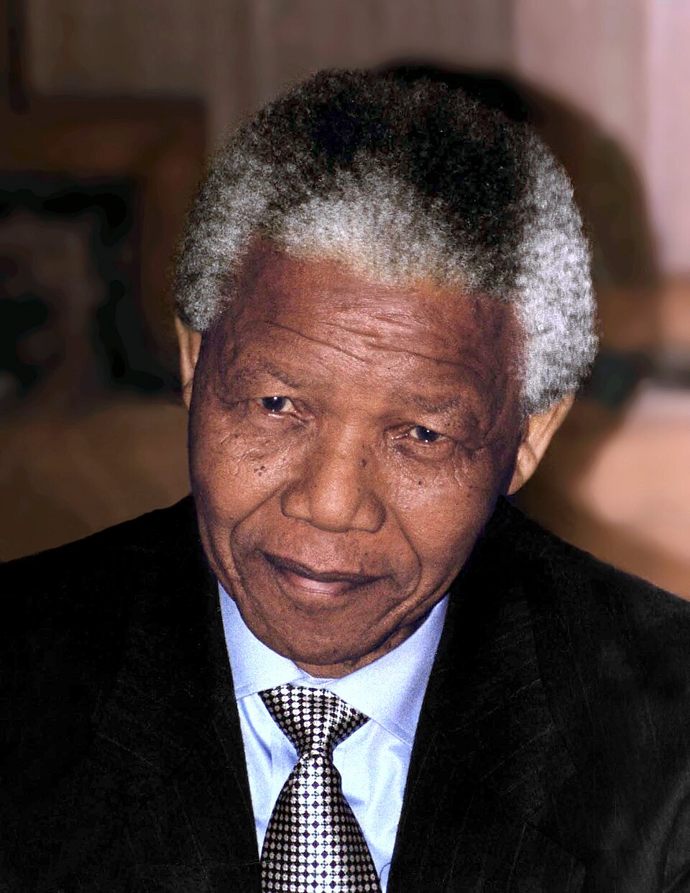

Son of Gadla Henry Mphakanyiswa Mandela, Chief and Nosekeni Nonqaphi Fanny, Right Hand Wife
Husband of Graça Machel, DBE
Ex-husband of Evelyn Ntoko Rakeepile and Winnie Madikizela-Mandela
Father of Madiba (Thembi) Thembekile Mandela; Makaziwe Mandela; Makgatho Lewanika Mandela; private Mandela-Amuah (Mandela); private Dlamini (Mandela); and 1 other
Brother of Mabel Notancu Timakwe and Constance Mbekeni Mandela
Half brother of Daligqili Mandela; Leabie Philiso Mandela; Nokuthamba Bhulehluthi; private Mandela; private Mandela; private Mandela; and private Mandela
Nelson Rolihlahla Mandela (Xhosa pronunciation: [xolíɬaɬa mandɛ̂ːla]; 18 July 1918 – 5 December 2013) was a South African anti-apartheid activist and politician who served as the first president of South Africa from 1994 to 1999. He was the country's first black head of state and the first elected in a fully representative democratic election. His government focused on dismantling the legacy of apartheid by tackling institutionalised racism and fostering racial reconciliation. Ideologically an African nationalist and socialist, he served as the president of the African National Congress (ANC) party from 1991 to 1997.
A Xhosa speaker born to the Thembu royal family in Mvezo, Union of South Africa, Mandela studied law at the University of Fort Hare and the University of Witwatersrand before working as a lawyer in Johannesburg. There he became involved in anti-colonial and African nationalist politics, joining the ANC in 1943 and co-founding its Youth League in 1944. After the National Party's white-only government established apartheid, a system of racial segregation that privileged whites, Mandela and the ANC committed themselves to its overthrow. He was appointed president of the ANC's Transvaal branch and oversaw the 1952 Defiance Campaign. He was repeatedly arrested for seditious activities and was unsuccessfully prosecuted in the 1956 Treason Trial. Influenced by Marxism, he secretly joined the banned South African Communist Party (SACP).
In 1962, Mandela was arrested and convicted of sabotage and conspiracy to violently overthrow the government, and was sentenced to life imprisonment. Mandela served 27 years in prison, split between Robben Island, Pollsmoor Prison, and Victor Verster Prison. Amid growing domestic and international pressure, and with fears of racial civil war, President F. W. de Klerk released him in 1990. Mandela and de Klerk led efforts to negotiate an end to apartheid, which resulted in the 1994 multiracial general election in which Mandela led the ANC to victory and became president.
Mandela was born on 18 July 1918 in the village of Mvezo in South Africa's Cape Province. His birth name was Rolihlahla, a Xhosa term colloquially meaning "troublemaker." He was born into the Madiba clan of the Thembu people; his father, Gadla Henry Mphakanyiswa, was a local chief and councillor to the Thembu king. After his father's death when Mandela was nine, the young Rolihlahla became a ward of Jongintaba Dalindyebo, the acting regent of the Thembu.
He attended Methodist mission schools and was given the English forename "Nelson" by a teacher. At Clarkebury Boarding Institute and Healdtown Methodist College he excelled academically and developed an interest in boxing and running. In 1939 he enrolled at the University of Fort Hare, a prestigious institution for black South Africans, where he studied for a Bachelor of Arts degree. There he met Oliver Tambo, who would become a lifelong friend and political ally. After participating in a student protest, Mandela was expelled and fled to Johannesburg to avoid an arranged marriage.
In Johannesburg, Mandela worked as a clerk for a law firm and completed his BA through the University of South Africa. He began studying law at the University of the Witwatersrand, where he was the only black African student in the faculty. His political consciousness deepened through friendships with activists such as Walter Sisulu and Anton Lembede. In 1944 he helped establish the ANC Youth League, which sought to transform the ANC from an elite petitioning body into a mass movement.
Mandela qualified as an attorney and, with Tambo, opened the first black-owned law partnership in South Africa. Their firm defended Africans charged under apartheid's pass laws and other discriminatory statutes. As repression intensified, Mandela's legal work increasingly intersected with underground political organising. He became a target of police surveillance and was subject to banning orders that restricted his movement and public speech.
The 1952 Defiance Campaign against unjust laws marked a turning point in mass resistance. Mandela was appointed national volunteer-in-chief and travelled the country organising civil disobedience. Thousands of volunteers courted arrest by deliberately breaking segregation regulations. The campaign brought the ANC substantial publicity and new members, but also provoked harsh government retaliation.
In 1955, the Congress Alliance convened the Congress of the People in Kliptown, where the Freedom Charter was adopted. The charter proclaimed that "South Africa belongs to all who live in it, black and white" and demanded a non-racial democratic state. Mandela, though in hiding to avoid arrest, played a significant role in shaping the document. The state later used the charter as evidence in the Treason Trial, in which Mandela and 155 others were prosecuted. All defendants were acquitted by 1961, but the trial consumed years of Mandela's life.
After the Sharpeville massacre in 1960 and the banning of the ANC and Pan Africanist Congress, Mandela concluded that non-violent protest alone could not dislodge apartheid. He co-founded Umkhonto we Sizwe (MK), the armed wing of the ANC, and coordinated a campaign of sabotage against government and economic targets intended to avoid loss of life. He left South Africa illegally in 1962 for military training and to seek international support, and was arrested shortly after his return at a police roadblock near Howick.
At the Rivonia Trial in 1964, Mandela and nine others faced charges of sabotage that could carry the death penalty. His speech from the dock, in which he declared he was prepared to die for a democratic and free society, became one of the defining statements of the anti-apartheid struggle. On 12 June 1964 he was sentenced to life imprisonment alongside Walter Sisulu, Govan Mbeki, and others. He was sent to Robben Island, where he would spend the next eighteen years.
Life on Robben Island was harsh. Mandela and other political prisoners performed hard labour in a lime quarry, were confined to small cells, and received limited correspondence. Despite restrictions, prisoners organised study groups and political discussions. Mandela earned a Bachelor of Laws degree from the University of London through correspondence while incarcerated. His status as a symbolic leader of the resistance grew internationally even as the South African government refused to release him.
In 1982 Mandela was transferred to Pollsmoor Prison on the mainland, and in 1988 to Victor Verster Prison near Paarl, where he lived in a warder's house with greater contact with the outside world. Throughout the 1980s, economic sanctions, cultural boycotts, and domestic uprisings increased pressure on the apartheid regime. Secret talks between government officials and Mandela began before his public meetings with State President P. W. Botha and later F. W. de Klerk.
Mandela was released on 11 February 1990, nine days after the unbanning of the ANC and other organisations. His walk through the gates of Victor Verster, hand in hand with Winnie Mandela, was broadcast worldwide. He immediately pledged to continue the struggle and called on the international community to maintain sanctions until apartheid was fully dismantled.
Negotiations between the ANC and the government were fraught. Violence in townships, the assassination of Communist Party leader Chris Hani, and brinkmanship from right-wing white groups threatened collapse. Mandela's moral authority and willingness to engage de Klerk helped keep talks on track. The interim constitution and the first non-racial elections in April 1994 paved the way for a government of national unity.
Mandela was inaugurated on 10 May 1994 as South Africa's first democratically elected president. He emphasised reconciliation between racial groups, symbolised by his support for the Springboks rugby team during the 1995 Rugby World Cup and his establishment of the Truth and Reconciliation Commission to investigate apartheid-era crimes. His administration expanded healthcare, housing, and education access, though economic inequality remained deeply entrenched.
On the international stage, Mandela championed human rights and mediated conflicts in countries such as Burundi. He stepped down after one term in 1999, setting a precedent for democratic succession in the young republic. Thabo Mbeki succeeded him as president. Mandela remained active in charitable work through the Nelson Mandela Foundation and later campaigns against HIV/AIDS, speaking openly about the disease after his son Makgatho's death in 2005.
In his later years Mandela divided time between Johannesburg and his rural home in Qunu, Eastern Cape. Recurring health problems led to prolonged hospitalisations from 2011 onward. He died on 5 December 2013 at the age of 95. The South African government declared a period of national mourning; leaders and citizens from around the world paid tribute to his role in ending apartheid and promoting peace.
Mandela is widely regarded as an icon of democracy and social justice. He received more than 250 honours, including the Nobel Peace Prize (shared with de Klerk in 1993). Streets, schools, and institutions bear his name across the globe. Critics have noted compromises during the transition, including the economic framework that preserved much of white capital, and his government's slow response to the HIV/AIDS crisis in the late 1990s. Historians nevertheless rank him among the most significant figures of the twentieth century.
Mandela married Evelyn Mase in 1944; they had four children and divorced in 1958. His second marriage, to Winnie Madikizela-Mandela in 1958, endured through his imprisonment but ended in separation and divorce in 1996 amid political and personal controversies. On his 80th birthday in 1998 he married Graça Machel, widow of Mozambican president Samora Machel. He is often referred to by his clan name, Madiba, as a sign of affection and respect in South Africa.